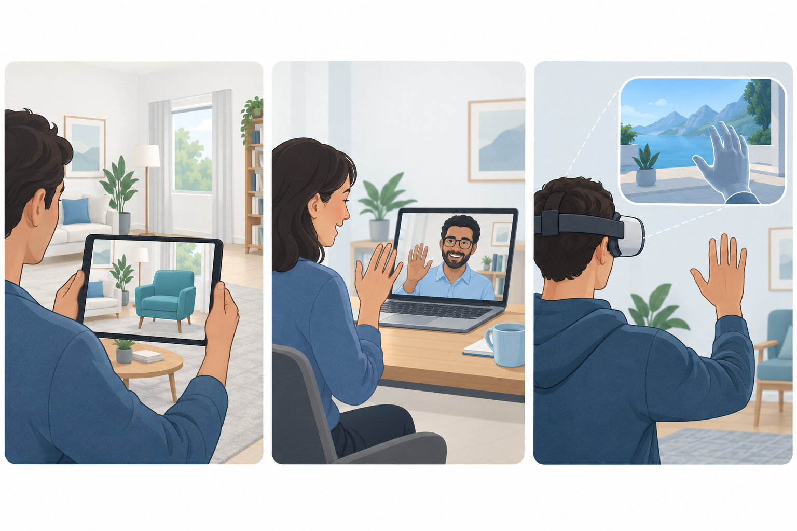
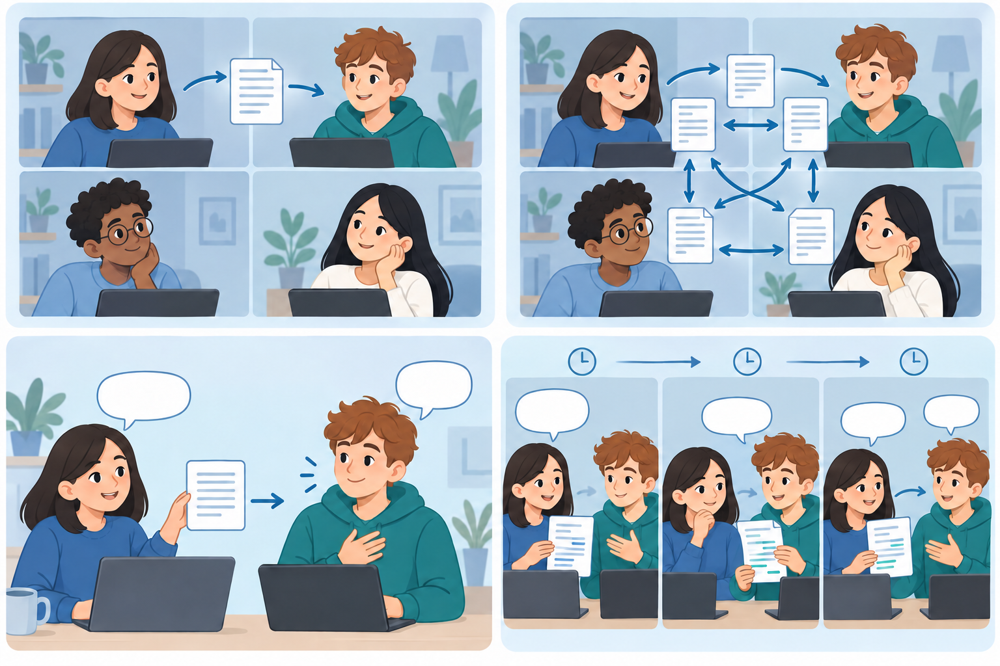

1장의 질문
인간과 AI가 어떻게 상호작용해야 하는가? 지각·추론·실행과 개발 과정이 1장의 주제입니다.
CHAPTER 02 · HCI & USER EXPERIENCE
감각·판단·구성의 세 차원으로 사용자 경험을 읽고, 현재 경험에서 미래의 목표 경험으로 나아갑니다.
사용자 경험(UX, User Experience)은 제품·시스템·서비스와 상호작용하며 생기는 지각적·감정적·심리적 반응을 포괄합니다. 화면에 대한 만족뿐 아니라 사용 전의 기대, 사용 중의 해석, 사용 후의 기억도 포함합니다.
같은 식사 주문도 종업원에게 말하는 과정과 키오스크를 조작하는 과정은 다릅니다. 목표가 같아도 사용자가 이해하는 방식, 느끼는 감정, 다른 사람과 맺는 관계가 달라지기 때문입니다. 좋은 시스템을 만들려면 현재 경험, 원하는 경험, 그 차이, 외부 환경의 영향을 먼저 알아야 합니다.
인간과 AI가 어떻게 상호작용해야 하는가? 지각·추론·실행과 개발 과정이 1장의 주제입니다.
그 상호작용이 사용자에게 어떤 경험이 되는가? 경험을 분석하고 목표 경험을 설정합니다.
경험 실타래(Threads of Experience)는 하나의 경험을 네 관점으로 나누어 설명하는 틀입니다. 메시지 전송에 적용하면 다음과 같습니다.
| 관점 | 메시지 전송에서의 경험 |
|---|---|
| 구성적 · Compositional | 채팅방 선택 → 입력 → 전송의 흐름과 읽음 표시의 의미를 이해합니다. |
| 정서적 · Emotional | 답장을 기다리며 기대·긴장을 느끼고, 답장이 오면 안도합니다. |
| 시공간적 · Spatio-temporal | 이동 중인지 집인지, 바로 답하는지 시간이 지난 뒤 답하는지에 따라 경험이 달라집니다. |
| 감각적 · Sensual | 말풍선과 색상, 알림음과 진동을 보고·듣고·느낍니다. |
감각적·판단적·구성적 경험은 하나의 경험을 감각, 가치 판단, 관계라는 관점에서 나누어 보는 분석 틀입니다.
| 경험 차원 | 핵심 질문 / 목표 | 조절 개념 | 조절 요인 |
|---|---|---|---|
| 감각적 경험 Sensual | 어떻게 느끼는가? 센스 있는 경험 | 실재감 | 생동감 + 상호성 |
| 판단적 경험 Judgmental | 어떤 가치를 얻는가? 가치 있는 경험 | 기인점 | 목적(가치) + 절차(주도성) |
| 구성적 경험 Compositional | 누구·무엇과 연결되는가? 조화로운 경험 | 관계의 복잡도 | 관계의 밀도 + 강도 |
말풍선과 알림음은 감각 자극입니다. 상대의 입력 상태가 바로 보이면 함께 대화한다는 사회적 실재감을 느낄 수 있습니다. 자극을 늘리는 것이 언제나 좋은 경험을 뜻하지는 않습니다.
실재감(Presence)은 어떤 대상이나 환경이 실제로 존재하는 것처럼 느끼는 감각입니다. ‘화면을 본다’에서 ‘그곳에 있는 듯하다’로 경험이 달라지는 지점을 설명합니다.
사물이나 대상이 실제로 눈앞에 있는 듯한 느낌입니다. 원본 예: AR로 내 방에 가상 가구를 배치하는 경험.
다른 사람이 실제로 함께 있는 듯한 느낌입니다. 원본 예: 가상 회의에서 상대의 시선과 몸짓을 느끼는 경험.
디지털 공간에 나 자신이 존재하는 듯한 느낌입니다. 원본 예: VR 속 손이 내 손 움직임을 따라오는 경험.

| 요인 | 뜻 | 하위 요소와 구분 |
|---|---|---|
| 생동감 · Vividness 지각적 속성 | 감각 자극을 얼마나 풍부하고 구체적으로 제공하는가? |
|
| 상호성 · Interactivity 행동적 속성 | 사용자 행동에 얼마나 빠르고 적절하게 반응하는가? |
|
영상 해상도를 높이면 생동감의 깊이가, 소리에 진동을 더하면 감각 채널의 넓이가 달라집니다. 손을 움직이자마자 가상 물체가 움직이면 상호작용 속도가, 손을 뻗어 물체를 잡는 동작이 그대로 대응하면 매핑이 좋아집니다.
AI를 활용하면 사용자의 상황을 예측해 콘텐츠와 반응을 조절할 수 있습니다. 예를 들어 날씨 정보에 일정과 위치의 맥락을 더해 필요한 안내를 제공할 수 있습니다. 이런 기능이 실제로 유용한지는 과업과 사용 조건에 맞게 평가해야 합니다.
| 개인화 · Personalization | 맞춤화 · Customization |
|---|---|
| 시스템이 사용자의 선호·행동을 바탕으로 내용을 맞춥니다. | 사용자가 자신의 의도에 맞게 환경·설정을 직접 조절합니다. |
판단적 경험은 사용자가 경험의 가치와 유용성을 평가하는 과정입니다. 같은 기능도 과정의 즐거움과 목적 달성 여부에 따라 평가가 달라질 수 있습니다.
자기 자신에게 원인을 두고 경험을 스스로 통제한다고 느끼는 관점입니다(p. 31). p. 37에서는 경험 자체가 목표이고 과정에서 만족과 의미를 얻는 경우로 설명합니다.
환경이나 외부 요인에 원인을 두는 관점입니다(p. 31). p. 37에서는 경험 밖의 목적·보상에 의해 동기가 부여되는 경우로 설명합니다.
| 조절 요인 | 대비되는 개념 | 살펴볼 점 |
|---|---|---|
| 목적 요인 · 왜 사용하는가 |
|
|
| 절차 요인 · 누가 이끄는가 |
|
|
그림 그리기 앱에서 그리는 과정 자체가 즐거우면 경험적 가치가 드러납니다. 대회 출품이라는 외부 목적을 위해 사용하면 수단적 가치가 드러납니다. 별도로, 도구와 난이도를 내가 선택하는지 앱이 정하는지도 살펴야 합니다.
자동화 수준이 높아지면 시스템이 수행하는 일이 늘어납니다. 이때 사용자가 시스템의 작동을 이해하고 필요한 부분을 통제할 수 있는지 살펴봅니다.
자동으로 처리할 일과 사용자가 직접 선택할 일을 경험의 목적에 맞게 나눕니다.
구성적 경험은 시간적·문화적·사회적 맥락 속에서 사람·사물·시스템과의 관계가 모여 전체 경험을 이루는 관점입니다. 화면의 구성 요소 수만을 뜻하지 않습니다.
개인의 행동과 환경 변화에 따라 형성되는 관계입니다.
다른 사람과 연결되고 상호작용하면서 형성되는 관계입니다.
사람뿐 아니라 사물·프로덕트·시스템 사이의 연결 구조에서 생기는 관계입니다.
관계의 복잡도는 구성원들이 얼마나 긴밀히 연결되고 영향을 주고받는지와 관련됩니다. 인원이 많아도 실제 소통이 적으면 낮을 수 있고, 인원이 적어도 깊게 상호작용하면 높을 수 있습니다.
| 요인 | 핵심 질문 | 원본 사례 |
|---|---|---|
| 관계의 밀도 · Density | 실제로 얼마나 많은 관계가 연결되어 있는가? | 한 서비스와만 소통하는 관계와 여러 의료진·환자·관계자가 연결된 관계의 차이 |
| 관계의 강도 · Strength | 한 관계에서 얼마나 자주, 오래, 깊이 소통하는가? | 단순 지시만 받는 관계와 트레이너·주치의와 지속적으로 정보를 교환하는 관계의 차이 |
스터디방에 사람을 초대했다고 곧바로 관계가 깊어지는 것은 아닙니다. 서로 실제로 연결되어 대화하는 관계가 늘어나는지(밀도), 피드백의 빈도와 깊이가 커지는지(강도)를 구분해서 봅니다.

AI 에이전트가 새로운 상호작용 상대가 되면 관계의 밀도·강도가 높아질 수 있습니다. 강의의 ‘인격적 에이전트’는 상호작용 방식에 관한 표현입니다. p. 41에는 Compositional Dimension과 Constructive Experience가 함께 나오며, 여기서는 차원 명칭인 Compositional을 씁니다.
세 차원을 좌표축으로 표현하면 현재 경험의 위치와 바꾸려는 방향을 함께 볼 수 있습니다. 어떤 차원을 얼마나 바꾸려는지 정리할 때 쓰는 모형입니다.
| 축 | 차원 | 나타내는 범위 |
|---|---|---|
| X축 | 구성적 경험 | 낮은 ↔ 높은 관계의 복잡도 |
| Y축 | 감각적 경험 | 낮은 ↔ 높은 실재감 |
| Z축 | 판단적 경험 | 내재적 ↔ 외재적 기인점 |
세 차원의 방향을 비교한 개념 도식입니다. 실제 측정값을 나타내지 않습니다.
사용자가 원하는 경험은 제품 내부에서만 결정되지 않습니다. 생활방식, 비용, 기술 환경이 경험의 세 차원 모두에 영향을 줄 수 있습니다. 이 외부 환경을 사회·문화적, 경제적, 기술적 요인으로 나누어 살펴보는 것이 SET 분석입니다.
| SET 요인 | 뜻 | 경험에 미칠 수 있는 영향 |
|---|---|---|
| S · Socio-cultural 사회·문화적 | 라이프스타일, 인구 특성, 문화·윤리, 생활방식의 변화 | 어디서 사용하고 누구와 연결되는지, 어떤 경험을 기대하는지가 달라집니다. |
| E · Economic 경제적 | 가처분소득, 물가, 고용, 가격, 비용 구조 | 어떤 서비스를 선택하고 지속할 수 있는지, 효율성을 얼마나 중시하는지가 달라집니다. |
| T · Technological 기술적 | 기술의 발전·성숙도·수용력, 대체 기술, 기술 관련 정책 | 어떤 자극·반응·자동화·관계 연결을 구현할 수 있는지가 달라집니다. |
강의에서는 리피치(repeech 또는 repeech-D)를 뇌졸중 후 마비말장애 환자의 말하기 기능 회복을 돕는 디지털 언어치료 프로그램으로 소개합니다. 아래 표는 이 사례에서 환경 변화가 경험에 미치는 영향을 정리한 것입니다.
| 경험 차원 | 사회·문화적 변화 | 경제적 변화 | 기술적 변화 |
|---|---|---|---|
| 감각적 | 비대면 전환으로 대면보다 실재감이 낮아질 수 있으며, 더 높은 실재감을 기대할 수 있음. | 경제적 부담 때문에 높은 실재감의 서비스를 기대하기 어려울 수 있음. | 실시간 피드백 등으로 생동감·상호성이 높아질 가능성. |
| 판단적 | 스스로 참여하는 모바일 훈련과 활동 자체의 가치가 중요해짐. | 신중한 소비로 사용자 주도·목적 지향적 가치가 중요해짐. | 데이터 자동 분석과 맞춤 제공으로 시스템 주도·수단적 가치가 커질 수 있음. |
| 구성적 | 대면 접점은 줄어도 일부 비대면 관계의 강도는 높아질 수 있음. | 새로운 연결을 늘리기보다 기존 관계를 활용할 수 있음. | 필수 연결에 집중하면서 데이터 공유로 관계의 강도를 높일 수 있음. |
목표 경험은 “더 좋은 앱”처럼 막연한 표현보다 구체적으로 정해야 합니다. 현재 상태인 As-is와 지향하는 상태인 To-be를 연결하는 네 단계를 사용합니다.
사용자 유형을 정하고 실재감·기인점·관계의 복잡도를 분석합니다. 지금 어떤 상황에서 무엇을 느끼고 통제하는지 살펴봅니다.
현재 경험과 욕구·기대·목표가 충돌하는 부분을 찾습니다. 각 차원에서 어느 방향으로 얼마나 바뀌기를 원하는지 파악합니다.
SET 요인을 도출하고, 그 변화가 세 차원의 경험을 어느 방향으로 이끄는지 분석합니다.
현재 경험, 내적 욕구, 외부 환경을 종합해 제공할 경험을 명시합니다. 설계·구현·평가로 목표를 구체화합니다.
원본 p. 69의 가정에서는 즉각적 피드백을 원하는 방향을 실재감 +3, 과정에 몰입하려는 방향을 내재적 기인점 쪽 −3, 치료사와 더 깊게 연결되려는 방향을 복잡도 +2로 나타냅니다. 이 수치는 사례에서 가정한 변화 방향과 강도를 나타내며, 모든 사용자에게 적용되는 측정값은 아닙니다.
외부 환경도 같은 방향으로만 작용하지 않습니다. 내적 욕구와 외부 압력을 종합해 어떤 경험을 제공할지 결정하고, 그 목표를 아키텍처·인터랙션·인터페이스 설계로 옮겨 검증해야 합니다.
현재 경험, 내적 갈등, 외부 환경을 종합해 제공할 경험을 정하라는 뜻입니다.
| 개념적 목표 | 개발 단계와의 연결 |
|---|---|
| 현재 경험을 파악 | 관계자·과업·맥락 분석 |
| 목표 경험을 구체화 | 콘셉트 모형·비즈니스 모델 기획 |
| 목표를 실제 경험으로 구현 | 아키텍처·인터랙션·인터페이스 설계 |
| 의도한 경험인지 확인 | 유용성·사용성·신뢰성 등의 구체적 원칙과 평가로 검증 |
온라인 학습 사례에서 목표 경험을 정하고 설계 질문으로 구체화해 봅니다. 아래 세부 설계안은 이해 보완용 예시입니다.
| 단계 | 온라인 학습에서의 분석 · 이해 보완 |
|---|---|
| 현재 경험 | 동영상은 보지만 질문과 피드백이 늦습니다. 진도는 정해져 있고 동료와 연결될 기회가 적습니다. |
| 내적 갈등 | 학생은 즉각적 피드백과 자기 속도에 맞는 학습을 원합니다. 필요한 때 다른 학생과 의견을 나누고 싶어 합니다. |
| 외부 환경 | 생활방식의 변화(S), 구독료 부담(E), AI 피드백 기술의 가능성과 한계(T)를 조사합니다. |
| 목표 경험 | 자신의 속도로 배우고 필요한 피드백과 동료의 도움을 받을 수 있는 경험을 제공합니다. |
문항별 피드백, 난이도 선택, 선택형 스터디 기능을 검토할 수 있습니다. 목표와 무관한 기능을 무조건 늘릴 필요는 없습니다.
학생이 피드백을 이해하는가? 학습 속도를 실제로 조절할 수 있는가? 원할 때 연결되고 원하지 않을 때 알림을 줄일 수 있는가?
학습용 복습 질문입니다. 먼저 내 말로 답한 뒤 핵심어와 이유를 대조하세요.
검색 결과가 없습니다. 다른 용어로 검색해 보세요.
최일준 교수의 「2장. HCI 3.0과 사용자경험」 95쪽을 다룹니다. 강조 표시는 PDF의 색·굵게·밑줄 기준이며, 쪽 번호는 PDF의 실제 순서입니다.
이해 보완 · 자체 학습 활동. 강의의 경험 차원을 적용하는 가상 사례이며 교수님 강조나 실제 시험 문제가 아닙니다.
온라인 스터디에서 발표 자료를 함께 수정하려고 합니다. 참여자는 수정 결과가 언제 반영되는지 모르고, 다른 사람이 무엇을 바꾸는지도 찾기 어렵다고 말합니다. 아래 순서대로 현재 경험과 목표 경험을 메모하세요.
저장 상태는 내 행동과 결과의 연결을 이해하는 데 도움을 줄 수 있다. 변경자 표시는 누가 수정했는지 판단하는 단서가 된다. 수정 내역을 작업 단위로 묶으면 관계를 따라가기 쉬워질 수 있다.
표시를 많이 넣는다고 항상 더 좋은 경험이 되지는 않는다. 협업 중인 사람이 많고 알림이 빈번하면 오히려 복잡해질 수 있다. ‘누가 수정했는지 설명해 보세요’라는 확인 과업으로 설계 의도를 점검한다. 이는 제안의 평가 방법이며 관찰 결과를 미리 확정한 것은 아니다.
완료 기준: 세 차원별 질문 하나, 현재 경험의 근거, 목표 경험 한 문장, 설계안과 확인 과업을 한 쌍으로 작성합니다.